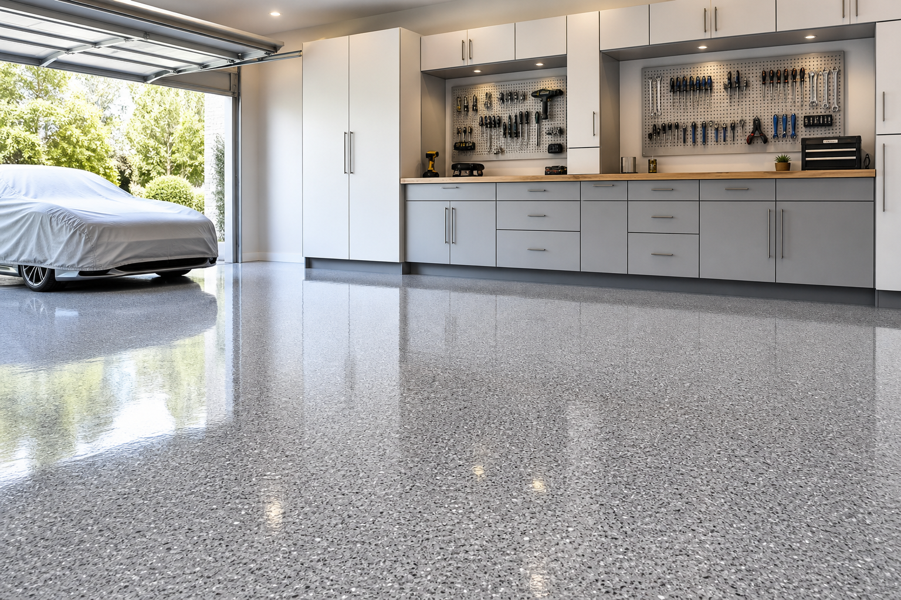

Epoxy vs Polyaspartic Garage Floor Coating: How to Choose
“Epoxy vs polyaspartic” is one of the most common searches in garage remodeling because topcoat chemistry affects cure time, durability expectations, and how the floor ages in sunlight. The honest answer: your outcome depends on the entire system—prep, build layers, and the exact products—more than a single word on a brochure. Local coating installers should explain the stack, not just the topcoat label.
Think in systems, not single products
A flake floor is typically a stack of steps. Changing one layer can change cure windows, adhesion requirements, and final performance. Ask your garage floor coating contractor to explain the system as a sequence, not a slogan.
When epoxy-class builds are popular
Many proven garage systems use epoxy-related chemistry in base/build coats. Your contractor should be able to explain cure schedules and when the space can return to use.
When polyaspartic topcoats get discussed
Polyaspartic topcoats are often chosen when contractors want specific cure characteristics and a tough wear layer—but product quality and installation details still dominate results.
UV, color, and what homeowners should validate
If your garage gets abundant direct sun, discuss color stability expectations for your chosen system and colors. Written specs beat assumptions.
Installer experience matters as much as chemistry
The best product on poorly prepared concrete still fails. Look for documentation, photos of prep, and clear warranty language from any epoxy or polyaspartic contractor you consider.
FAQ
Is polyaspartic always better than epoxy?
No. The right choice depends on the full system and your goals.
Why is the topcoat such a big deal?
It is the primary wear layer for abrasion and chemical exposure in daily garage life.